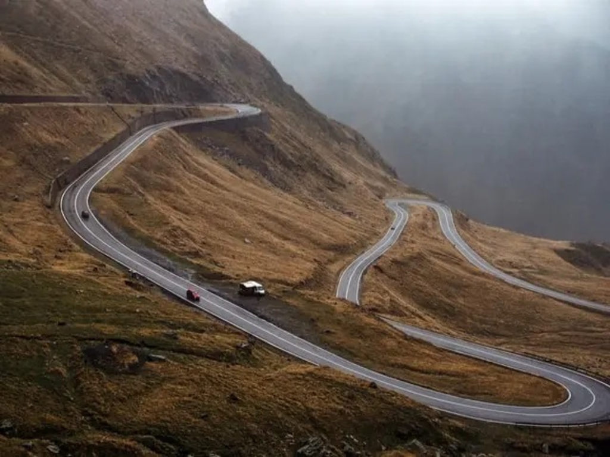
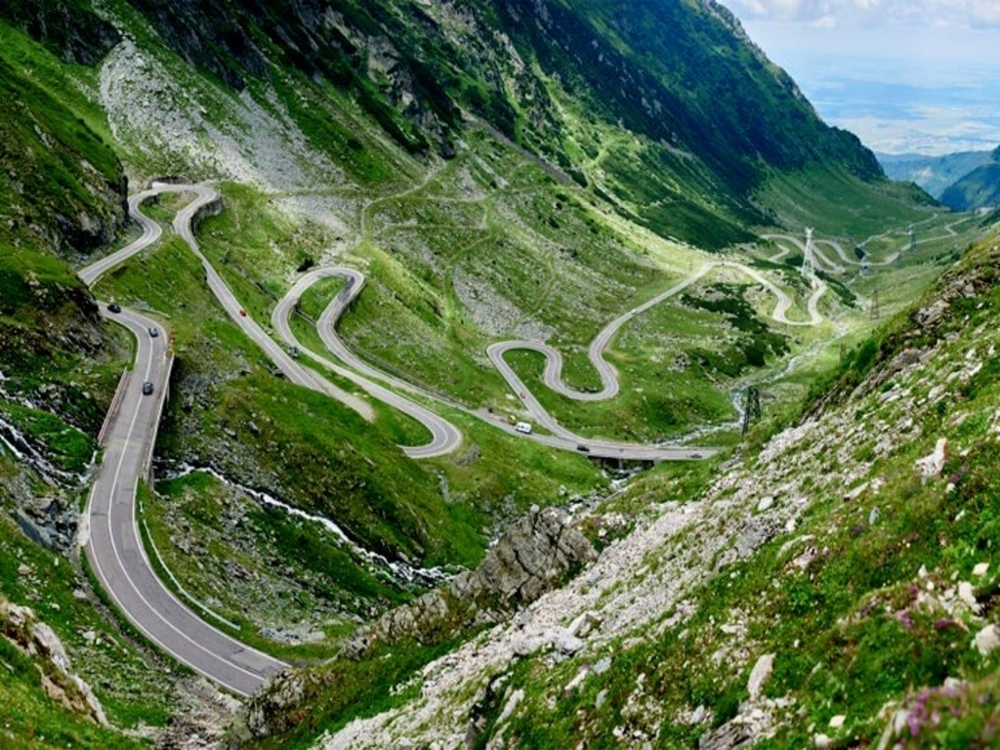
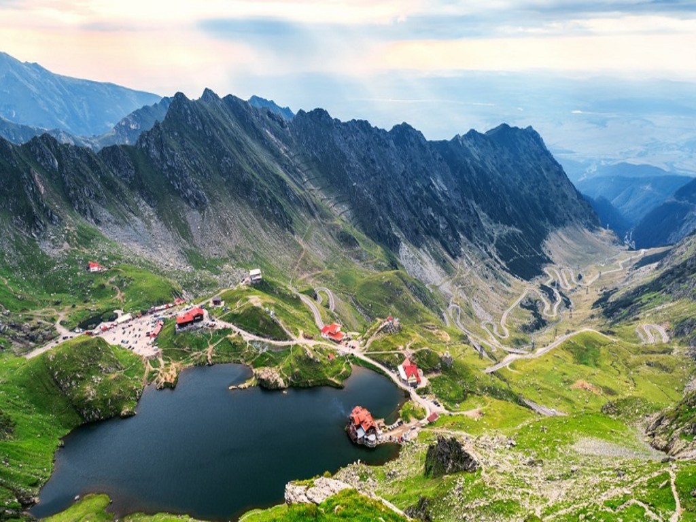
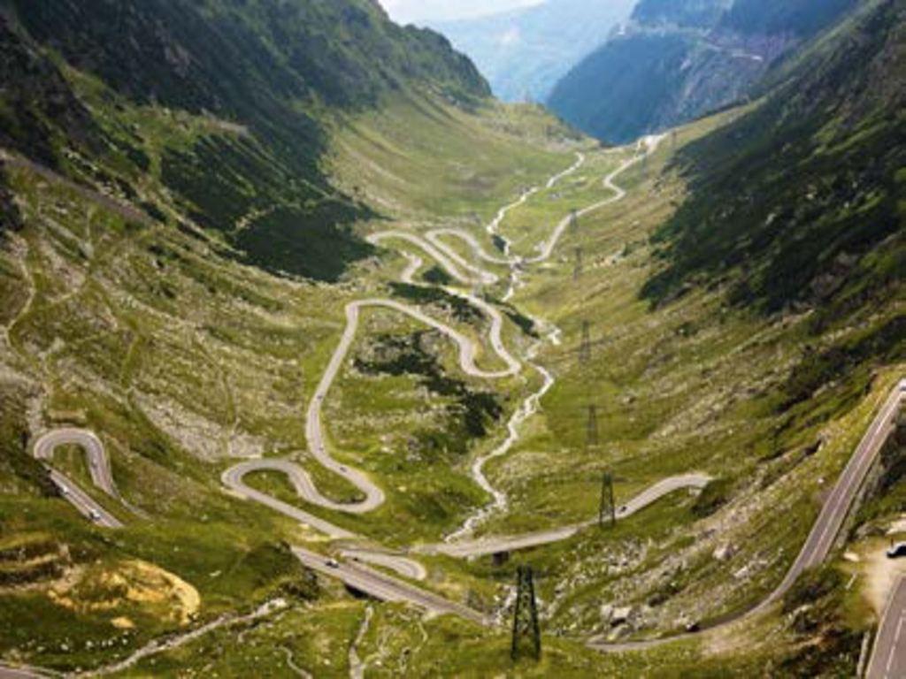
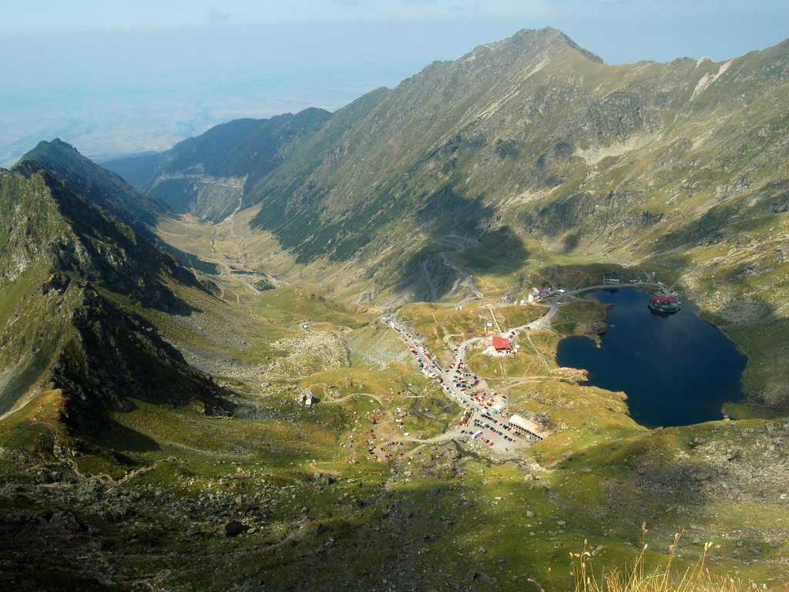

| Reclama |
Transfagarasan trip |
Reclama |
|---|---|---|
|  |
The Transfagarasan is in Romania. It goes from south to north through the Fagaras mountains which are part of the Carpathian mountain ridge. Hence its name - Trans-Fagarasan. It is the second highest road in Romania and it is known for its spectacular landscapes. This means 151 km of road curves and twists perfectly set for driving enthusiasts, but also for those who want to admire the beauty of nature in a unique location. |
|
|  |
Built between 1970-1974 on the personal orders of communist politician Nicolae Ceausescu, the highway stretches some 150km, passing over the Fagaras mountains in Transylvania, Romania Transfagarasan stretches 90 kilometers between the Bascov village, Arges County, and Cartisoara village, Sibiu County. |
|
|  |
It has national-road ranking and is the second-highest paved road in the country after the Transalpina. Besides the thrilling views, the highway is flanked by some popular tourist destinations of Romania: Poenari Fortress, that can be reached by climbing 1480 stairs, Vidraru Dam – an arch dam that was built with the purpose to produce hydroelectricity, Balea Lake – a lake situated at the highest altitude on Transfagarasan, 2.034 meters, where you can visit an ice hotel during winter time. |
|
|  |
It starts near the village of Bascov, near Pitești, and stretches 90 kilometres (56 mi) to the crossroad between the DN1 and Sibiu, between the highest peaks in the country, Moldoveanu and Negoiu. Transfagarasan Road is open from July till October and, due to the topography, the allowed average speed is around 40 km/h. |
|
|  |
The road, built in the early 1970s as a strategic military route, connects the historic regions of Transylvania and Wallachia. |